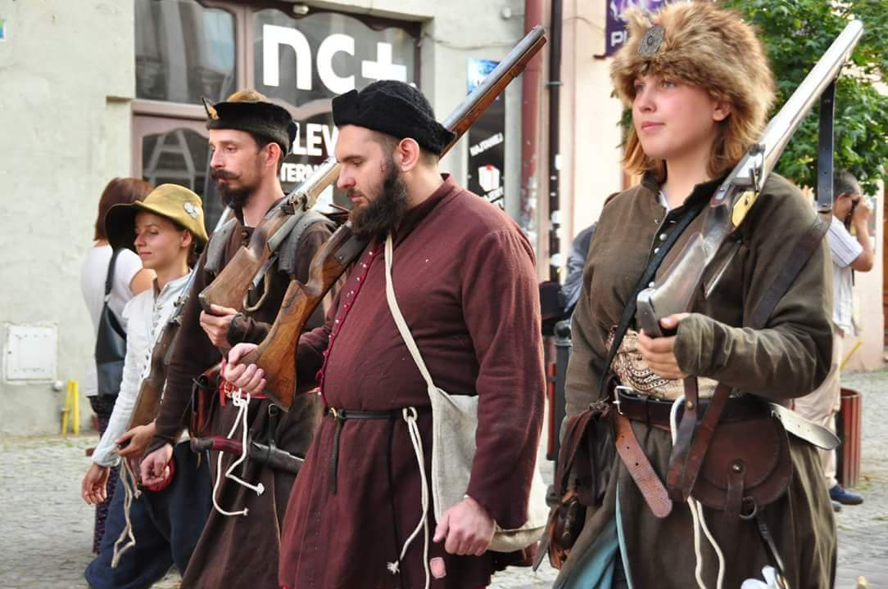

Historical Reenactment - what it really is?
Historical reenactment (or re-enactment) is an educational or recreational activity in which primarily amateur hobbyists and history enthusiasts dress up in uniforms and follow a script to reproduce features of a historical event or period. This can be as particular as a single war scene, such as the reenactment of Pickett's Charge at the 1913 Great Reunion, or as broad as an entire time, such as Regency reenactment.
While most historical reenactors are volunteers, others are members of the armed services or historians. The reenactors, or participants, frequently conduct study on the equipment, uniforms, and other things they will carry or utilize. Reenactors either buy or make their own clothing and accessories from specialty retailers. Historical reenactments span the centuries, from the Roman Empire to major global wars and the twentieth-century Korean War.
Renaissance reenactment (my period)
 Historical reenactment of events from the Renaissance period and the European Age of Exploration is known as Renaissance reenactment. Its largest definition includes period reenactment from the early 15th century to the mid-18th century. Medieval reenactment refers to reenactments of earlier events, whilst modern replication refers to reenactments of more recent events. The English Civil War in the United Kingdom, the Eighty Years' War in the Low Countries (especially the Netherlands), L'Escalade in Switzerland, and the Polish–Lithuanian Commonwealth in eastern Europe are all examples of Renaissance recreation.
Medieval Reenactment
Medieval recreation is a type of historical reenactment that focuses on the time from the fall of Rome to the end of the 15th century. The Middle Ages refers to the second half of this time period. The range of additional terminology used for the period adds to the complexity of terms.
Western European historians refer to this period as the Migration Period or the Dark Ages, whereas German historians refer to it as Völkerwanderung ("wandering of the peoples"). The 5th and 6th centuries are commonly referred to by this title. Early medieval is a term used by reenactors who recreate the following period of history, which spans the 7th through 11th century. High medieval refers to the 12th to 14th centuries, whereas Late medieval refers to the 15th century.
Because there are so many eras to choose from, most medieval reenactment groups concentrate on a narrower time period, perhaps focusing on a certain century, decade, series of battles, or monarch, depending on how genuine the recreation and encampment is meant to be.
Living history groups and reenactors who specialize in the Middle Ages focus on reenacting civilian and military life during that time period. In Eastern Europe, it is extremely popular. The reenactor's and their group's purpose is to create an authentic portrayal of a person who may have existed in a certain place at a specific time while being approachable to the general audience. Authentic camping, cooking, performing historical skills and trades, and playing historical musical instruments or board games are all examples of living history activities.
The main goal of this type of reenactment is to re-enact historical conflicts or combat strategies. The variations range from historical dueling practice (typically with an appropriate period weapon such as an arming sword or rapier, as well as wrestling as a martial art) to reenactment of actual or mythical medieval wars.
Middle Top